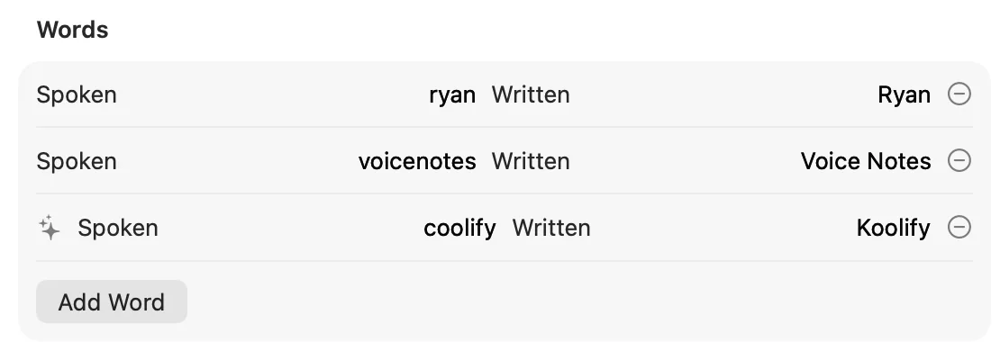
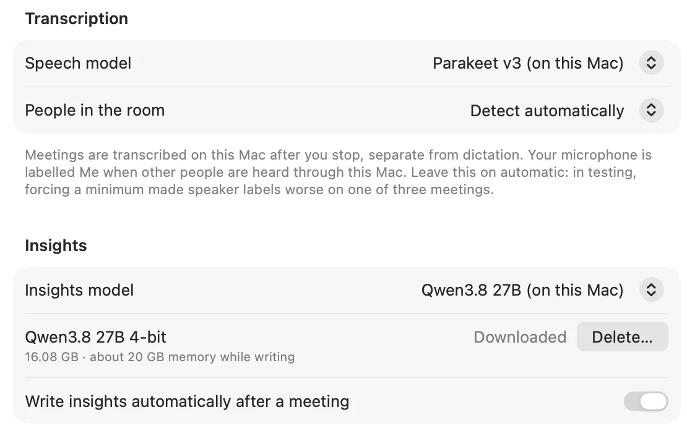
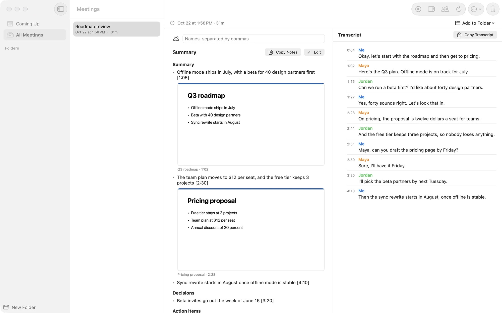
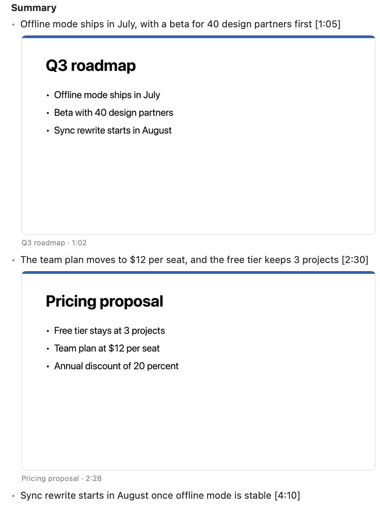
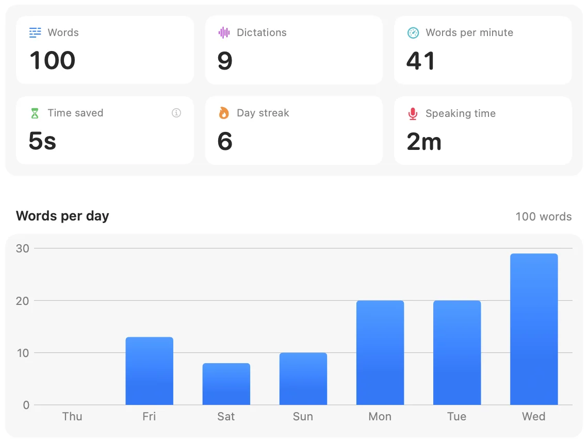

For Mac
Voice Notes
Dictation and meeting notes in one Mac menu-bar app. Private, and on your device.
Replaces your dictation and meeting-notes apps.
In any app
Your words land at the cursor.
fnHold to talk. Let go, and it pastes.
Dictation
Hold fn. Talk. It types.
Works in any text field, in any app. Let go, and your words land at the cursor, with filler removed and punctuation in place. Other audio on the MacBook speakers is lowered while you dictate. On AirPods and other Bluetooth headsets, the first press records your voice, not silence.
“um so I think we should uh move the design review to Thursday at two”
I think we should move the design review to Thursday at two.
Sam RiveraNorthwind
“please ask sam rivera about northwind”
Please ask Sam Rivera about Northwind.

Ask Northwind to send the Q3 roadmap by Friday.
North Wind
ReplaceReplace and Add to Dictionary
“the booth is three thousand dollars, plus five dollars and fifty cents, and we meet at one twenty”
The booth is $3,000, plus $5.50, and we meet at 1:20.
“Ask North Wind to send the notes.”
Northwind
To Sam
Hi Sam,
I moved the design review to Thursday. The deck is attached.
Thanks,
Sam
Benchmark
On this Mac
12 of about 30 corrected clips. 18 more to rank.
The booth is $3,000, plus $5.50, and we meet at 1:20.
Ask Northwind to send the Q3 roadmap by Friday.
FlaggedOn-device speech
Fast, accurate, and local.
Speech recognition runs on your Mac with Parakeet. Nothing is uploaded, and there is no server to wait on. Text usually appears about half a second after you let go. A press with no real speech, a dead mic, room tone, or a tiny blip, is skipped before transcription, so nothing is typed and no engine, local or cloud, can invent text for it. A click with no voice cancels cleanly: nothing is transcribed, no audio is kept, and nothing is flagged for review. Quiet speech still works.
- to transcribe a clip
- ~215ms
- word error rate
- 5.7%
- of audio uploaded
- 0bytes
Measured on the developer’s own dictation clips, on his Mac. Your numbers will vary with your voice, mic, and Mac.

Meetings
Meeting notes, with no bot in the call.
Press record and Voice Notes captures both sides of the conversation, the call audio and your microphone, right on your Mac. Nothing joins the call but you.
SamCan we move the launch to the 14th?
YouWorks for me. I’ll update the plan.
SamGreat, I’ll let the team know.
Who said what
Transcripts are split by speaker, so you can scan back to the moment that mattered. Clips in the Speakers panel are levelled for playback, so a quiet mic is audible. If the microphone and system audio drift apart, echo is removed and turns stay grouped by speaker, instead of breaking into one word per line.
Notes that write themselves
A summary, decisions, and action items, each linked to the point in the call it came from.
Knows your calendar
Your next meeting sits in the menu bar. One click records it, already named. A minute before a meeting with a call link or other guests, a small glass card offers Record and links the recording to that event. You can change how early it appears. If a Google Calendar account needs to sign in again, the menu bar shows a notice.
Notes you write first
Add an agenda, goals, or questions ahead of time. They show as “Before the meeting” in that meeting’s notes and feed the summary.
A countdown at the end
An 8-second countdown card appears when you leave the call, the window closes, the scheduled end passes, or there is a long silence. It offers Keep Recording or Stop Now, and talking cancels it.
Redo, or tidy
Transcribe Again keeps a backup, so you can redo a transcript and restore the previous one. Tidy cleans a transcript up.

Snapshots
The slides, in your notes.
When someone shares their screen, Voice Notes keeps a picture of each new slide and places it next to the point it supports. Your notes read like the meeting looked.

Insights
See how you use your voice.
Words dictated, speaking pace, time saved, and the apps you talk to most. Counted on your Mac, for your eyes only.

Compare
One app, both jobs.
How Voice Notes lines up against a dictation app and a meeting-notes app.
| Voice Notes | Wispr Flow | Granola | |
|---|---|---|---|
| Dictation into any app | ✓ | ✓ | ✗ |
| Meeting notes | ✓ | ✓ | ✓ |
| No bot joins the call | ✓ | ✓ | ✓ |
| Speaker labels | ✓ | ✓ | ✓ |
| Calendar integration | ✓ | ✓ | ✓ |
| Shared-screen snapshots | ✓ | ✗ | ✓ |
| Personal dictionary and snippets | ✓ | ✓ | Jargon list |
| Speech recognition on your Mac | ✓ | Cloud | Cloud |
| Audio and transcripts stay on your Mac | ✓ | Cloud | Cloud |
| Works offline | ✓ | ✗ | Notes only |
| MCP for AI agents | ✗ | ✓ | ✓ |
| Windows and phone apps | ✗ | ✓ | ✓ |
| No subscription | ✓ | Free tier | Free tier |
Based on each company’s public product, pricing and help pages as of October 2026. “Cloud” means audio is sent to the company’s servers for transcription, or notes are stored there.
Wispr Flow, Granola and their logos are trademarks of their respective owners, shown only to identify the products compared. Voice Notes is not affiliated with either company.
Privacy
Your voice stays yours.
You speak
Hold fn to dictate, or press record for a meeting.
Your Mac listens
Audio is transcribed on your Mac. It never goes to a server.
Text lands
In the app you were typing in, or in your meeting library.
Recordings stay put
Audio, transcripts, and notes are kept in a folder on your Mac. Delete a meeting and it is gone.
Cloud is opt-in
Want a cloud model for cleanup? Add your own key. Until you do, nothing leaves your Mac.
Quiet logs
Diagnostics record counts and timings, never what you said.